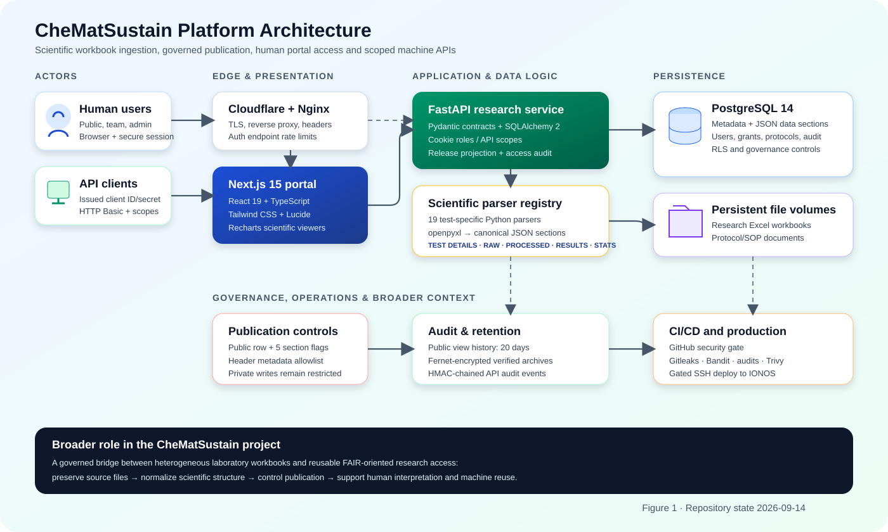

Database and Platform Documentation
A system-level guide to CheMatSustain’s scientific data model, production architecture, governed access paths, and one complete test implementation from Excel parser to interactive viewer.
Contents and Scope
- Overview
- Mission and capabilities
- Scientific test inventory
- Data organization
- Architecture and technology stack
- Architecture image
- Component responsibilities
- Broader research context
- Deployment and security
- Database design
- Storage model
- Table catalogue
- Relationships
- Release and tenancy controls
- Lifecycle and retention
- User process flows
- Public viewer
- Team user
- Administrator
- API client
- Worked implementation: TB
- Workbook contract
- Backend parser
- Upload and persistence
- Read projection
- Frontend viewer
- Extension checklist
- Operations and maintenance
- Glossary and source map
Audience
Scientific and project users
Understand how uploaded laboratory workbooks become searchable reports and which publication choices affect public visibility.
Developers and maintainers
Locate the relevant model, parser, service, route, viewer, migration, test, deployment, and security logic.
Administrators and data owners
Understand account classes, resource assignments, publication flags, API credentials, access history, and safe data lifecycle.
Auditors and reviewers
Trace controls from browser/API identity to authorization, PostgreSQL policy, field projection, audit event, retention, and CI/CD gate.
f831ba3. It describes code and migration intent; it is not a live production data dictionary with row counts or confidential values. Some migration-era columns retain keycloak_*/oauth_* names, but active authentication is local session authentication and locally issued API client credentials.1. Platform Overview
CheMatSustain is a research data portal for selected chemicals and nanomaterials. It converts heterogeneous test-specific Excel workbooks into a consistent five-section data contract, stores the result with ownership and publication metadata, and presents it through both human-oriented scientific viewers and scope-controlled machine APIs.
1.1 Core capabilities
- Upload and retain source Excel workbooks for scientific traceability.
- Parse each assay/instrument format with a dedicated Python parser.
- Normalize parser output into a stable JSON contract.
- Browse data by work package, CMS material identifier, test category, and test type.
- Render specialized tables, charts, statistics, images, and CSV downloads.
- Publish a test while independently selecting which scientific sections are public.
- Support authenticated public viewers, internal team users, administrators, and machine clients.
- Apply resource grants, API scopes, tenant context, access logs, and operational security gates.
1.2 Canonical scientific record
| Section | Purpose | Typical content | Public control |
|---|---|---|---|
test_details | Experimental context | Work package, material, preparation, instrumentation, cell line, treatment | release_test_details |
raw_data | Observed/source measurements | Runs, spectra, time series, plates, replicate observations | release_raw_data |
processed_data | Derived measurements | Normalized values, fitted curves, calculated metrics | release_processed_data |
final_results | Reported outcome | Summary metrics, means, standard deviations, acceptance results | release_final_results |
statistical_analysis | Statistical interpretation | ANOVA, Brown–Forsythe, Tukey comparisons, significance | release_statistical_analysis |
test_details: full test name, acronym, type, endpoint, endpoint outcome, SOP, and ERM identifier. This does not release the Test Conditions tab or any other test-detail fields.1.3 Registered tests
MTTDLSFTIRHR-STEMUV-VISZETASIMSROSTBUPSXPSXRDDSCTGAMNTTB-MicrofludicRotifierWaterFleaAlgae
The spelling TB-Microfludic and Rotifier are canonical identifiers retained for database/API compatibility.
2. Architecture and Technology Stack

2.1 How to read the architecture
- Human users access one HTTPS origin. Nginx sends page requests to Next.js and rewrites
/api/*to FastAPI. - Machine clients use separately issued HTTP Basic credentials against
/api/v1; scope and resource checks occur on every request. - FastAPI owns application contracts, parsing orchestration, role checks, release projection, resource filtering, and audit writes.
- PostgreSQL stores searchable identifiers, normalized JSON sections, users/sessions, ownership, grants, protocols, and audit history.
- Persistent volumes preserve original workbooks and SOP/protocol files separately from container images and database rows.
- CI/CD deploys only after secret, static, dependency, tenant-isolation, SBOM, and container-image checks succeed.
2.2 Component Responsibilities
| Layer | Confirmed technology | Responsibility and usage |
|---|---|---|
| Edge | Cloudflare-facing origin; Nginx stable | HTTPS termination at the origin, HTTP→HTTPS redirect, reverse proxy, request-size boundary, response security headers, and login/OTP/registration/reset throttling. |
| Frontend | Next.js 15.5.25, React 19, TypeScript, Tailwind CSS | Authenticated portal, public/team login modes, catalogue, backoffice, dynamic test routing, protocol browser, and API Explorer. |
| Scientific UI | Recharts 2.15, Lucide React | Test-specific charts, scientific tables, interactive run selection, images, status indicators, and client-side CSV/JSON downloads. |
| HTTP client | Axios | Same-origin /api requests with secure cookie credentials and generated X-Request-ID. |
| Backend | Python, FastAPI 0.136, Pydantic 2 | REST routing, validation, user/session workflows, parser registry, publication projection, administrative APIs, and machine APIs. |
| Persistence access | SQLAlchemy 2 async + asyncpg | Async sessions, ORM models, transactions, query filtering, and PostgreSQL tenant context. |
| Scientific parsing | openpyxl | Reads workbook cells/sheets, normalizes values and dates, structures raw/processed/final/statistical sections, and records parser warnings. |
| Relational store | PostgreSQL 14 | Metadata, JSON scientific records, users, sessions, organisations, protocol hierarchy, access assignments, credentials, release flags, and audit records. |
| File persistence | Host bind mounts / Docker volumes | Original research workbooks under /app/data, protocol documents under /app/protocol_files, encrypted access archives under /var/backups/.... |
| Runtime packaging | Docker Compose | Runs db, backend, frontend, nginx, and public-access-retention on an isolated bridge network. |
| Delivery | GitHub Actions + SSH deploy to IONOS | Security workflow gates deployment; server performs migrations, image builds, service restart, mount checks, docs-exposure checks, and health checks. |
2.3 Broader context
Laboratory interoperability
Partners can continue producing familiar assay-specific workbooks. Dedicated parsers absorb layout differences and emit one application contract.
Scientific interpretation
Specialized viewers retain domain meaning that a generic JSON browser would lose: units, replicate context, plotted series, uncertainty, and statistical tables.
Governed dissemination
A record can be discoverable as public while raw, processed, final, statistical, or condition sections remain independently withheld.
Human and machine reuse
The portal optimizes comprehension; the /v1 interface supports authorized pipelines without sharing browser sessions or administrator credentials.
tests.file_path value links a database record to the persistent research-data volume. Public responses always omit this internal server path.3. Database and Storage Model
3.1 Hybrid persistence strategy
Relational identifiers
Primary keys, foreign keys, work package, CMS identifier, test name, tenant, publication state, timestamps, and grants support filtering and governance.
JSON scientific sections
Test-specific nested structures remain flexible without forcing every instrument and assay into one very wide relational schema.
Immutable source context
Excel and protocol files remain on protected persistent storage for provenance and possible reprocessing.
3.2 Central tests table
| Column group | Columns | Meaning |
|---|---|---|
| Identity | id, organisation_id | Record key and owning tenant. |
| Scientific locator | work_package_name, element_cms_id, test_name | Human navigation and exact lookup triple used by /tests/listings. |
| Scientific payload | test_details, raw_data, processed_data, final_results, statistical_analysis | Five canonical JSON sections populated by a parser or JSON API. |
| Publication | is_public and five release_* booleans | Two-level disclosure: row discoverability plus independent section grants. |
| Outcome | test_result | Optional pass/fail summary independent of section JSON. |
| Provenance | file_path, created_at, updated_at | Source-workbook reference and lifecycle timestamps. |
3.3 Principal relationships
protocol_tests does not currently carry a foreign key to tests.id. It links to the scientific record through the unique locator triple. Its optional display_name changes presentation without changing the stable lookup values.3.4 Active Application Table Catalogue
| Domain | Table | Role | Key links / controls |
|---|---|---|---|
| Science | tests | Scientific metadata, five JSON sections, publication flags, source path. | → organisations; public/RLS policies; section projection. |
| Identity | users | Local interactive accounts: name, email, bcrypt password, role, OTP seed, active state. | Unique email; roles admin/user/public_viewer. |
| Identity | sessions | Opaque browser sessions with expiry, active state, user agent, IP. | → users; session ID stored in HttpOnly Secure cookie. |
| Public audit | public_data_access_events | Who viewed which test, through which route, with which released sections. | → users/tests; 20-day live and encrypted-archive retention. |
| Machine access | api_clients | Current issued HTTP Basic client credentials. | → organisations/users; bcrypt secret hash, scopes, disable/rotation version. |
| User grants | user_access_profiles | Global resource switches and platform tester designation. | PK/FK user; all_tests/all_protocols/all_files; audit tenant. |
| User grants | user_test_access | Explicit per-user test access. | Composite PK → users + tests. |
| User grants | user_protocol_access | Explicit per-user protocol access. | Composite PK → users + protocols. |
| Tenant | organisations | Tenant root and organization status. | Referenced by research, protocol, credential, grant, audit tables. |
| Tenant | organisation_memberships | Organization membership/role metadata. | → organisations; historical keycloak_subject name. |
| Cross-access | organisation_test_access | Read a test without transferring ownership. | Composite PK → organisations + tests; RLS. |
| Cross-access | organisation_protocol_access | Read a protocol without transferring ownership. | Composite PK → organisations + protocols; RLS. |
| Catalogue | categories | Top-level protocol/navigation taxonomy. | → organisations; 1:* protocols; ordered. |
| Catalogue | protocols | Protocol metadata and attached SOP file metadata. | → categories/organisations; 1:* protocol_tests. |
| Catalogue | protocol_tests | Connects protocols to test locator triples. | → protocols/organisations; unique test locator; display label. |
| API governance | api_definitions | Describes API products, version, classification, and scopes. | Unique name; active state. |
| API governance | developer_applications | Application registration and credential generation metadata. | → organisations; legacy keycloak_client_id column name. |
| API governance | access_requests | Requested scopes, justification, status, and expiry. | → organisation + application. |
| API governance | approval_decisions | Independent approval stages and reasons. | → access_requests; unique role/stage per request. |
| API governance | active_grants | Issued scopes, expiry, and revocation metadata. | → request/application/organisation. |
| Security audit | audit_events | Append-oriented, tamper-evident API/security activity. | → organisations; sequence + previous/event hash. |
3.5 Compatibility and Migration-Era Tables
The migration history also defines four tables from the earlier identity/access architecture. They are part of the schema history and may exist in deployed databases, but they are not the active authentication path described in Section 4.
| Table | Original purpose | Current interpretation |
|---|---|---|
keycloak_identities | Map an external identity-provider subject to an organization and legacy user. | Compatibility/cutover data. Active browser identity is local users + sessions. |
oauth_clients | Registry for organization-bound OAuth machine clients. | Superseded operationally by local api_clients HTTP Basic credentials. |
api_scopes | Scope definitions, classification, and approval requirement. | Governance reference; the active API issue UI uses an explicit allowlist matching route scopes. |
revocations | Immutable revocation records for grants, OAuth clients, or memberships. | Compatibility/governance history; current local API clients also have immediate is_active disablement. |
3.6 Publication and field projection
is_public controls public discoverabilityrelease_* flagsmask_test_for_public()- A private test cannot retain active release grants; attempts fail closed or revoke the flags.
- Public viewers receive public rows only, with unreleased scientific sections removed.
- The fixed seven-field report header remains available for identification.
- Team users and administrators receive the complete authorized record.
file_pathis never returned in the public projection.
3.7 Tenant and resource controls
set_config(..., true) prevents tenant context leaking through the connection pool.chemat_app role. RLS policies and CI tests exist, but operators must verify the live connection role and ownership migration status rather than infer it from source code.3.8 Data Lifecycle, Audit, and Recovery
Scientific record lifecycle
Access and audit data
| Record | Captured information | Retention/control |
|---|---|---|
| Browser session | Opaque session ID, user, creation/expiry, active flag, user agent, IP. | Default seven-day expiry; logout invalidates; expired sessions are cleaned during session creation. |
| Public data access event | User identity snapshot, test locator, owning organization, access level, released sections, request ID, route, timestamp. | 20 days. Hourly worker encrypts and verifies archives before deleting expired live rows; expired archive entries are also pruned. |
| Machine/API audit event | Actor subject/client, action, resource, outcome, timestamp, safe metadata, hash chain. | Append-oriented database permissions and HMAC/hash-chain tamper evidence. |
| Source research file | Original uploaded workbook. | Persistent host bind mount; replacement deletes old file only after DB update succeeds; failed parse/create cleans the new file. |
| Protocol file | SOP document and DB metadata (name, MIME, size, path). | Protected persistent mount; authorized download with safe path resolution and no-store headers. |
Operational recovery controls
- PostgreSQL data persists in the
pgdataDocker volume. - Research workbooks and protocol files use host bind mounts so image rebuilds do not erase them.
- The deploy script refuses to proceed over tracked server edits, applies reviewed migrations, verifies mounts, rebuilds images, and checks direct plus Nginx health.
- API documentation endpoints are fail-closed and the deployment explicitly verifies that
/docs,/redoc, and/openapi.jsonare not published.
4. Process Flow from the User Point of View
4.1 Public viewer
The browser session is created immediately after successful public registration or password authentication. Public viewers do not complete the privileged OTP step. The backend—not the browser—filters public records and projects sections, so hiding tabs is a usability layer rather than the security boundary.
4.2 Team user
Team users can browse internal resources available to their role/access assignments. Specialized test viewers provide full scientific presentation rather than public-section masking.
4.3 Password and session behavior
- Passwords are bcrypt-hashed; schemas require at least 12 characters for account creation/reset.
- Privileged
userandadminroles require emailed OTP after password verification. - The session cookie is HttpOnly, Secure by default, SameSite=Lax, and has a seven-day maximum age.
- Unsafe cookie-authenticated requests require an allowed
Origin; responses receive request IDs, no-store, and security headers.
4.4 Administrator and API Client Flows
Administrator: ingest and publish
.xlsx/.xlsAdministrators can create, update, delete, filter, publish, and unpublish tests; manage users and organisations; assign test/protocol/file access; inspect public access history; and issue or disable API credentials. Making a test private revokes all five section grants.
Authorized API client
/api/v1Available issue-time scopes are:
tests:readexperimental-data:readprotocols:readprotocol-files:downloadfiles:navigate
The client secret is stored only as a bcrypt hash. Rotation invalidates the previous secret immediately; disabling an API client affects its next request. Disabling a human user does not implicitly disable their API clients, so offboarding includes the dedicated “disable all” operation.
5. TB Test: End-to-End Coding Logic
The Trypan Blue (TB) implementation is representative because it contains structured conditions, repeated raw runs, processed values, final replicate statistics, an optional statistical sheet, charts, images, downloads, and direct support for partial public releases.
5.1 File and component map
| Stage | Source | Key symbol |
|---|---|---|
| Parser | backend/parsers/tb.py | TBParser, parse_excel_tb() |
| Registry/upload | backend/api/controllers/test.py | PARSERS["TB"], save_and_parse(), build_payload_from_parse() |
| Persistence | backend/api/models/test.py | Test JSON columns and release flags |
| Read service | backend/api/services/test.py | get_listings(), mask_test_for_public() |
| Dynamic dispatch | frontend/.../RoleAwareTestViewer.tsx | SPECIALISED_VIEWERS["tb"] |
| Viewer | frontend/src/components/tests/tb/page.tsx | TBDataViewer |
5.2 Workbook contract
| Sheet/pattern | Parser behavior | Output |
|---|---|---|
Test_conditions | Reads key/value labels and fixed cells for work package, scientists, material, dispersion, cell line, treatment, and replicate metadata. | test_details plus replication_metadata |
Raw_data_* | Discovers all matching sheets; extracts test/plate labels, assay metric, chamber measurements, protocol details, instrument serial, and notes. | List of raw run blocks |
Processed data_* | Matches suffixes to raw sheets; reads condition labels and derived cell-death values. | List of processed run blocks |
Final results | Reads sample/endpoint, four conditions, three replicate rows, mean row, and standard-deviation row. | Final result object |
Statistics (optional) | Reads software/test, ANOVA and Brown–Forsythe summaries, ANOVA table, data summary, and Tukey post-hoc comparisons. | Statistical analysis object; otherwise available:false |
5.3 Backend Parser Logic
1Open and normalize
TBParser.__init__() loads the workbook with formulas resolved (data_only=True) and selects Test_conditions. Helpers normalize human labels into snake-case keys, parse Excel/date variants, replace decimal commas, and return None for unusable numeric values.
2Extract typed scientific structures
Dataclasses define the parser’s output vocabulary—WorkPackageData, MaterialData, DispersionData, CellLineData, TreatmentData, raw/processed blocks, and final results. Extraction methods return dictionaries using asdict().
3Assemble one canonical payload
build_payload_from_parse() writes file_data["replications"] into the database raw_data column. TB deliberately emits both raw_data and replications with the same list for compatibility with this canonical upload path.5.4 Upload, Persistence, and Read Projection
Administrator upload sequence
POST /tests/requires the administrator role.validate_excel_filename()accepts only.xlsxor.xls.get_parser("TB")resolvesparse_excel_tbfrom the centralized 19-test registry.save_uploaded_file()sanitizes the timestamped name and writes the workbook under the persistent research-data mount.- The parser runs. Any parser failure deletes the just-saved file and returns a non-sensitive 400 response.
clean_for_json()recursively converts dates, decimals, tuples, and unsupported values into JSON-safe primitives.TestService.create_test()rejects a duplicate locator triple, validates private/release consistency, commits the row, and refreshes it.- If database creation fails, the controller removes the saved workbook so no orphan is left.
Read sequence
POST /tests/listings with WP/CMS/testPublic projection pseudocode
5.5 TB Frontend Viewer Logic
Fetch and state
TBDataViewer receives the decoded route values and requests the exact test record. React state tracks the response, loading/error state, active tab, and selected run.
Release-aware tab construction
TB is directly safe for partial public releases. It derives available tabs from response values; Test Conditions additionally checks release_test_details !== false because the public response may contain only the header metadata envelope.
Derived visualization data
| Memoized model | Transformation | UI result |
|---|---|---|
safeRawData | Accept arrays only; otherwise empty list. | Safe run selector, raw table, and chart. |
rawBarChartData | Each chamber → {chamber, value}. | Bar chart of percent cell death. |
safeProcessedData | Accept arrays only and select current/first run. | Condition/value processed chart and table. |
finalMeanChartData | Conditions joined with mean and SD maps. | Final mean ± SD visualization. |
finalReplicateSeries | Replicate rows assigned stable keys/colors. | Per-replicate series alongside summary. |
| Statistics sections | Read optional summary/table arrays defensively. | ANOVA, Brown–Forsythe, data summary, and Tukey tables. |
Presentation and export
- The always-visible header shows work package, CMS ID, ERM ID, full name, acronym, type, endpoint, outcome, and SOP.
- Test Conditions renders material, dispersion, cell line, treatment, and metadata tables only when released/authorized.
- Each data section has explicit empty states rather than assuming values exist.
downloadTable()reads rendered table cells, quotes CSV values safely, and downloads a section-specific file.- Configured TB images use normalized CMS identifiers and provide display, missing-image fallback, and download links.
5.6 End-to-End TB Trace
| # | Input/state | Code decision | Output/next stage |
|---|---|---|---|
| 1 | Admin selects TB and an Excel file. | Canonical value TB matches parser and viewer registries. | Multipart request to POST /tests/. |
| 2 | Filename has supported extension. | Sanitize and save to persistent research volume. | Stable source file path. |
| 3 | Workbook sheets and cells. | TBParser normalizes values and extracts each domain. | Canonical nested dictionary. |
| 4 | Parser dictionary. | Controller maps compatibility replications to DB raw_data; cleans JSON values. | Validated TestCreate. |
| 5 | Locator + payload + release state. | Service checks duplicates/private grants and commits transaction. | tests row plus file reference. |
| 6 | User browses WP/material/test. | Catalogue/listings filter by interactive role. | Dynamic route /{wp}/{element}/TB. |
| 7 | Viewer requests exact locator. | Public response is projected; private authorized response is complete. | Safe TB response and access event. |
| 8 | TB React component receives response. | Build tabs and memoized chart/table models from available sections. | Scientific report, charts, tables, images, downloads. |
Failure behavior
| Failure | Behavior |
|---|---|
| Unknown test type | Upload receives 400; dynamic viewer reports no configured viewer. |
| Unsupported file extension | Upload rejected before parsing. |
| Workbook/sheet cannot be loaded | Parser logs the internal error; saved file is removed; client receives safe processing error. |
| Optional Final results missing | Parser warning plus structurally valid empty final result. |
| Statistics missing | {available:false, notes:...}; viewer renders an unavailable/empty state. |
| Duplicate WP/CMS/test triple | Service returns conflict rather than creating an ambiguous record. |
| Public request for private test | 404 to avoid exposing record existence. |
| Unreleased section | Section payload removed server-side and corresponding tab hidden. |
6. Operations and Extension Guide
6.1 Adding a new test type
- Define the canonical test identifier and keep it identical across create options, parser registry, URL dispatch, and viewer registry.
- Create a parser under
backend/parsers/that returns all five canonical sections (use explicit empty/unavailable structures where a section is unsupported). - Add the parser function to
PARSERSinbackend/api/controllers/test.py. - Create a null-safe TypeScript viewer under
frontend/src/components/tests/. - Register the viewer in
RoleAwareTestViewer.tsxand add catalogue display metadata. - Add the test option to
CreateTestModal.tsx. - Test every independent public section flag and all relevant combinations; never infer a section’s release from another section’s presence.
- Run parser tests, public projection tests, backend suite, ESLint, TypeScript, Next.js build, Compose validation, and security workflow.
6.2 Parser design rules
- Normalize spreadsheet variability at the parser boundary.
- Use safe conversions and preserve missing values as
null/None. - Return stable typed keys; do not make viewers understand workbook coordinates.
- Record optional/missing scientific sections explicitly rather than crashing.
- Avoid logging complete scientific payloads in production; treat source data according to classification.
6.3 Database change rules
- Use reviewed, idempotent migrations outside development; production auto-DDL must remain off.
- Back up and restore-test before ownership/backfill or destructive changes.
- Preserve fail-closed behavior when tenant context, release state, or credentials are missing.
- Keep heavy JSON out of list/index queries; fetch full payload only for one authorized record.
- Coordinate DB rows and persistent files to avoid dangling paths or orphan files.
- Do not store plaintext passwords, client secrets, OTPs, authorization headers, or tokens in logs/audit metadata.
6.4 Verification commands
7. Glossary and Source Map
Glossary
| Term | Meaning in this system |
|---|---|
| CMS identifier | CheMatSustain material identifier used in record lookup and routes, e.g. CMS_30a_CH_TER. |
| ERM identifier | External/reference material identifier stored within material test details. |
| Canonical sections | The five normalized scientific JSON groups shared across test types. |
| Public test | A row with is_public=true; section flags still determine disclosed scientific content. |
| Public viewer | Authenticated least-privilege interactive role that can read only public projected records. |
| Team user | Interactive user role with password + OTP and authorized internal record access. |
| API client | Issued machine credential with hashed secret, scopes, and resource/tenant assignments. |
| RLS | PostgreSQL Row-Level Security, using transaction-local organization/access context. |
| Header projection | Seven allowlisted identification fields retained when detailed Test Conditions are unreleased. |
| Protocol test | A navigation-tree link from a protocol to a test locator triple, not the scientific data row itself. |
Authoritative source map
| Concern | Primary source |
|---|---|
| Application assembly and middleware | backend/app.py |
| Database engine/session | backend/utils/db.py |
| ORM model definitions | backend/api/models*.py, backend/api/models/*.py |
| Reviewed schema evolution | backend/migrations/ and backend/migrations/sql/ |
| Scientific upload and parser registry | backend/api/controllers/test.py |
| Test query/public projection | backend/api/services/test.py |
| TB parser | backend/parsers/tb.py |
| TB viewer | frontend/src/components/tests/tb/page.tsx |
| Viewer dispatch/public fallback | RoleAwareTestViewer.tsx, PublicReleasedDataViewer.tsx |
| Interactive identity | backend/api/controllers/user.py, backend/utils/auth.py |
| Machine identity and scopes | backend/security/auth.py, router_api_clients.py, router_phase1.py |
| Tenant context | backend/security/tenant.py and RLS migrations |
| Retention | backend/scripts/public_access_retention.py |
| Production topology | docker-compose.yml, nginx/default.conf |
| Security/deployment gate | .github/workflows/security.yml, deploy.yml, scripts/deploy.sh |